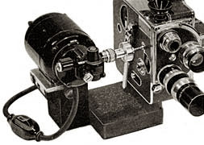

Camera Motors

Synchronous MotorSeveral manufacturers supplied motors for use with the Bolex model H camera. The model shown here is the SA6, 60 cycle, 110 volt AC motor. It was supplied before and after the war by the American Bolex Company and National Cine Equipment of New York. Stevens Engineering Company also supplied a similar AC model of their own design. All of these models were designed to run the Bolex at an exact speed of 24 frames per second. The motor was mounted to an aluminum alloy base which could be attached to a tripod. The camera was operated by attaching the motor driveshaft to the crankshaft of the camera.